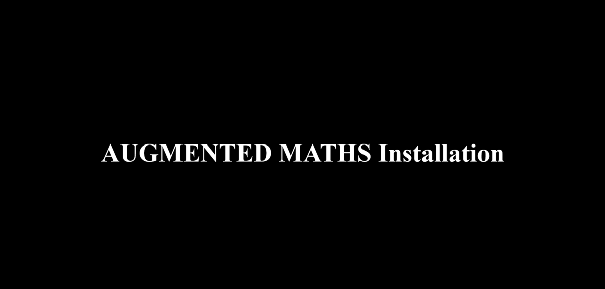

Introduction to Augmented Maths
What are the benefits of using Augmented reality in teaching?
Augmented Reality (AR) allows the user to see the real world, with virtual objects superimposed upon or composited with the real world. (Azuma, 1997). Thus,- AR supplements reality, rather than completely replacing it
- Making the textbook come alive for the user (learner)
- What's more, the use can interact with the virtual object.
See this video for an overview of what is AR, where can AR be used and research findings on learning with AR
What is the 'Augmented Maths' app?
The 'Augmented Maths' app is an AR app for teachers and by teachers. The app evolved based on feedback from teacher-users of the app. The 3 unique features of this app that sets it apart from other AR apps are:- It makes the textbook come alive for the students. Students can see the 3D projections of the 2D geometrical shapes from NCERT Maths textbook (currently Class 8, Chapter - Visualization of 3D solids).
- You & your students can also interact with these 3D shapes to enhance conceptual understanding.
- It provides teachers with student-centered, constructively-aligned lesson plans that you can use in the classroom.
See the video below for a demonstration of the 'Augmented Maths' app.
{kind=link}
{kind=link}
-
Getting started with Augmented Maths
Augmented Maths has 2 sub-apps within it on topics : taken from Chapter : Visualizing 3D solids of NCERT Class 8 Maths textbook. -
Installing Augmented Maths
Follow the gif video below to install the Augmented Maths application.  -
How to use the Augmented Maths app
Scroll the ‘User Manual’ to get stepwise instructions